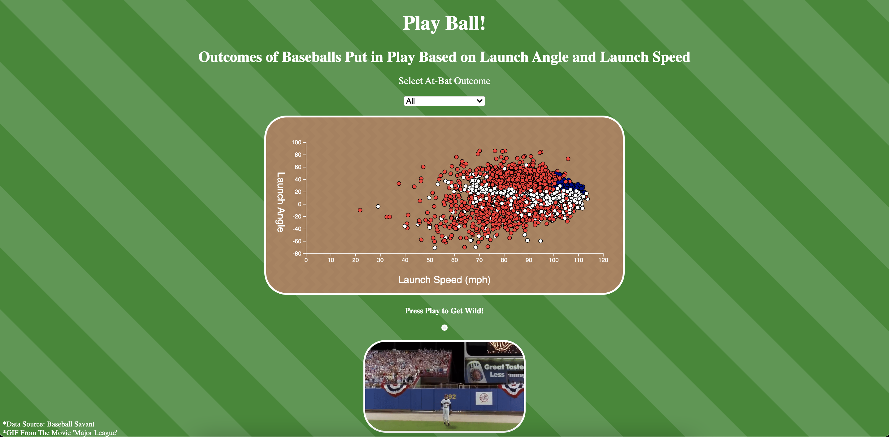
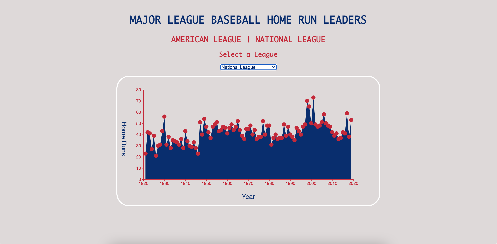

Sabermetrics, the empirical analysis of baseball, has taken over the baseball world
in the past decade. More attention is being paid to statistics such as launch angle and launch speed.
Does the baseball need to be hit at a specific speed and specific angle to increase the chances
it goes out of the ballpark?

The Home Run is one of the most exciting moments in a baseball game. How have home runs changed
in the history of baseball? Are players hitting more home runs now than before? Is there a difference between
the American League and National League? Let's take a look.